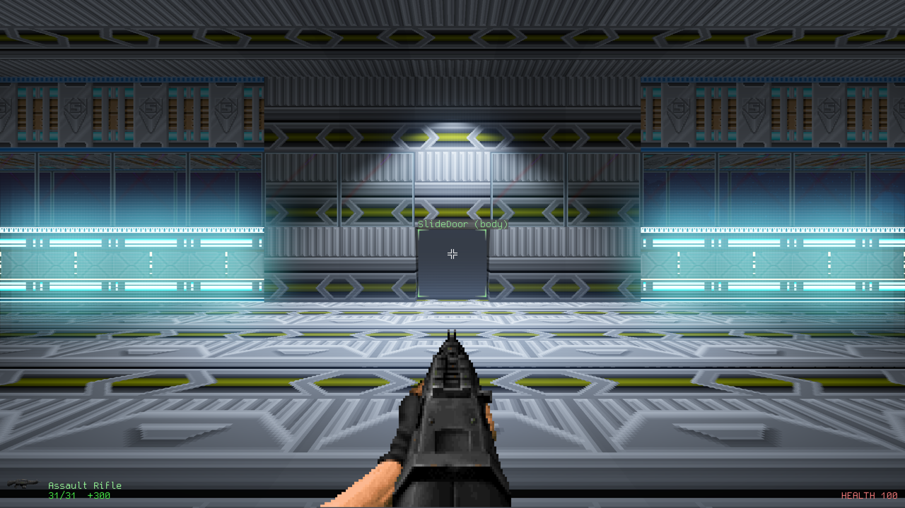
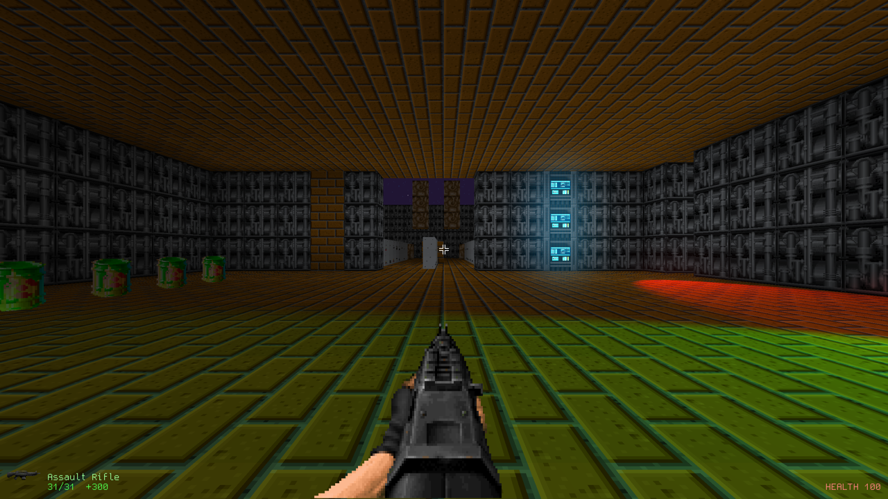
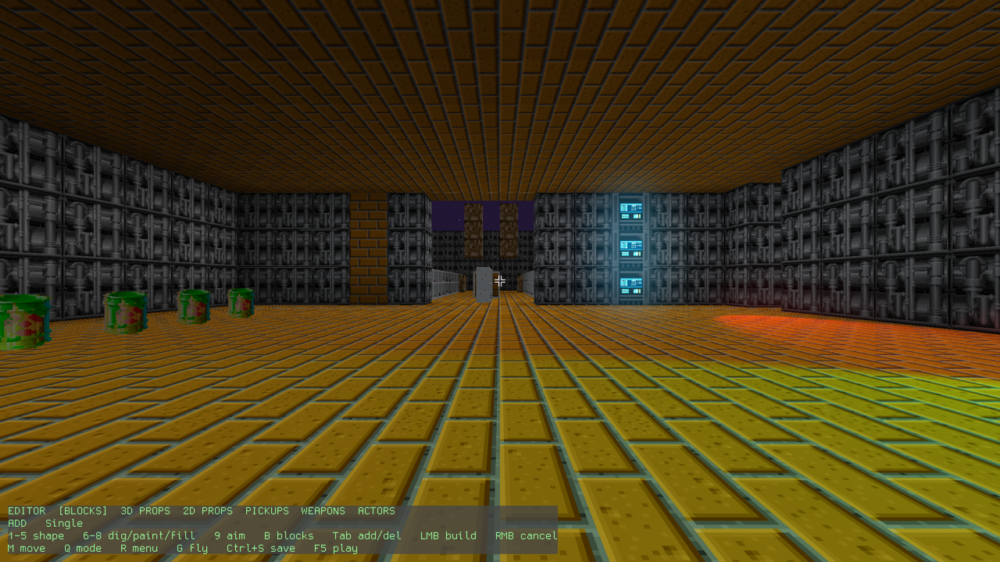

Go FPS
Go FPS is my from-scratch first-person engine, written in Go directly on top of OpenGL 3.3. It isn't really a game yet. It's a sandbox that boots into a small test map, where you can walk around, shoot things and rebuild the level while it's running. The world is made of greedy-meshed voxel chunks, with sprites, glTF meshes, a skybox, fog, and spotlights that cast proper shadow-mapped shadows.
One of my favourite parts is the Doom asset import. The engine reads ZDoom-style weapon definitions, so about 155 classic sprite weapons load, animate and use up ammo. The test map has a range room where every one of them is lying on the floor with a box of ammo beside it. Around that there's collision, a bit of physics, projectiles, particles, doors, keypads, and pathfinding for actors walking their routes.
Press F5 and the whole game switches into an in-game editor with three modes: blocks, props and actors. There's per-face texture mapping and atlas pickers, and everything you build is saved back into the map file. Lately I've been building "the Ark", a generation ship after a war, and making the renderer fast enough to hold it. It needs cgo and GLFW, so for now there's no browser version.
Screenshots



Latest updates
- 2026-09-13 Camera drawn between physics steps, draw time on the overlay
- 2026-09-13 The Ark furnished and lived in, and a renderer fast enough to hold it
- 2026-09-12 Orientation-aware movement: roll input, gravity-free up, doors follow it
- 2026-09-11 Signs on the Ark's walls, a tumbling sky and a leak check
- 2026-09-11 The Ark, a generation ship after the war, and the tools to script it
- 2026-09-11 AO strength slider in the rendering menu